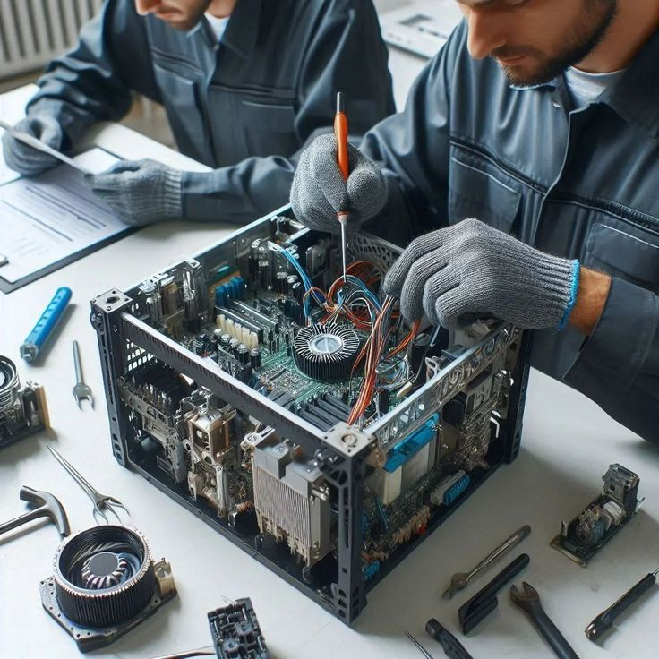

El proyecto consiste en solucionar problemas de hardware y software presentes en dispositivos tecnológicos de los usuarios, ofreciendo soluciones eficientes que mejoren su funcionamiento y la experiencia del usuario.
Ver Proyecto
El proyecto consiste en fortalecer los servicios de mantenimiento que ofrece Technology Corporation, mediante la aplicación de procedimientos organizados y estandarizados que permitan conservar los equipos tecnológicos en óptimas condiciones de funcionamiento.
Ver ProyectoProyecto orientado a fortalecer la infraestructura tecnológica de Technology Corporation, mediante la actualización y optimización de los recursos tecnológicos que forman parte de sus operaciones diarias.
Ver ProyectoEste formulario ha sido desarrollado para realizar evaluaciones de manera digital. Al finalizar el examen y enviar las respuestas, el sistema calcula automáticamente la calificación y la envía al correo electrónico proporcionado por el usuario. De esta forma, se agiliza el proceso de evaluación y se ofrece una retroalimentación inmediata y eficiente.
Ver Proyecto Probar nuestro formularioLa página web de TecCorp es un sitio diseñado para presentar información de la empresa y mostrar los proyectos tecnológicos desarrollados por el equipo, utilizando un diseño moderno, organizado y fácil de navegar.
Ver Proyecto